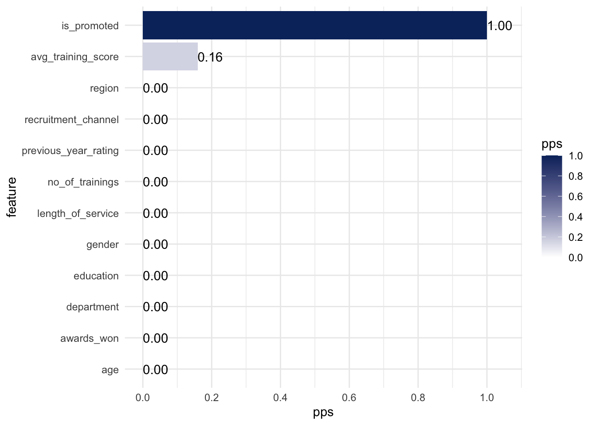
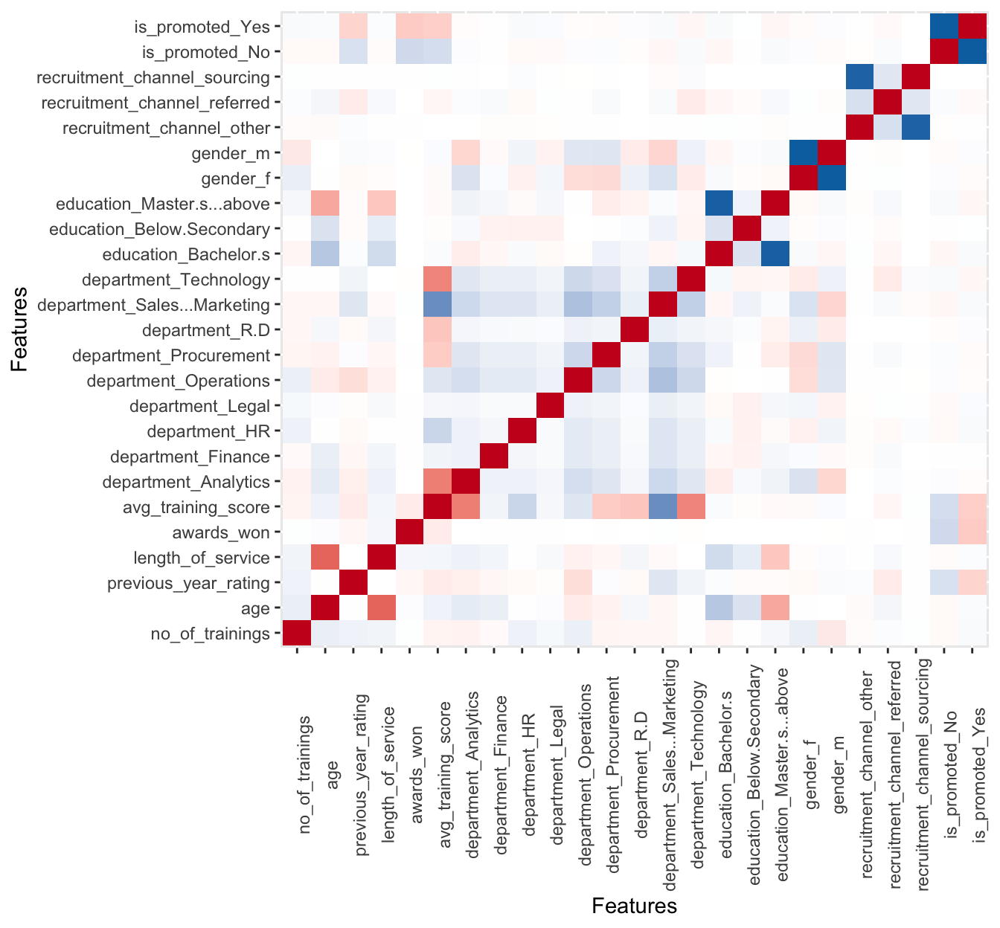

Start with the required libraries, and then load some data.
Code
# data manipulation
library(tidyverse)
library(janitor)
# Data Exploration
library(ppsr)
library(correlationfunnel)
library(DataExplorer)
# Visualisation addition
library(plotly)
# Load Data ----
promotions_tbl <- readr::read_csv(file = "train.csv") %>%
janitor::clean_names()
# reduce the dataset size
cleaned_promotions_tbl <-
promotions_tbl %>%
tidyr::drop_na() %>%
dplyr::mutate(
is_promoted = as.character(is_promoted),
is_promoted = if_else(is_promoted==1, "Yes", "No") %>% as.factor()
)1. Predictive Power Score
Code
cleaned_promotions_tbl %>%
select(-employee_id) %>%
visualize_pps(
y = 'is_promoted',
do_parallel = FALSE
)
2. Correlation Funnel
Code
cleaned_promotions_tbl %>%
select(-employee_id) %>%
binarize() %>%
correlate(target = is_promoted__Yes) %>%
plot_correlation_funnel(interactive = TRUE) %>%
plotly::config(displayModeBar = FALSE)3. DataExplorer
Default Heatmap
Code
corr_plot <- cleaned_promotions_tbl %>%
select(-employee_id) %>%
DataExplorer::plot_correlation(
theme_config = list(
legend.position = "none",
axis.text.x = element_text(angle = 90)
)
)
Interactive Heatmap
Code
corr_plot$data$value <- round(corr_plot$data$value, digits = 2)
plotly::plotly_build(corr_plot) %>%
plotly::layout(width = 700, height = 700) %>%
plotly::config(displayModeBar = FALSE)Reuse
Citation
BibTeX citation:
@online{dmckinnon2023,
author = {Adam D McKinnon},
title = {Expediting {Exploratory} {Data} {Analysis}},
date = {2023-01-03},
url = {https://www.adam-d-mckinnon.com//posts/2023-01-03-exploratory_analysis},
langid = {en}
}
For attribution, please cite this work as:
Adam D McKinnon. 2023. “Expediting Exploratory Data
Analysis.” January 3, 2023. https://www.adam-d-mckinnon.com//posts/2023-01-03-exploratory_analysis.